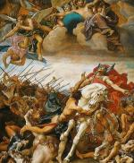

MACLASSE.COM

Après la chute de l'Empire Romain, les Francs sont des barbares du nord de l'Europe séparés en deux peuples distincts. Les Francs Saliens, installés en Gaule Belgique, et les Francs Ripuaires ou Rhénans implantés en Germanie.
En 481, Clovis devient roi et il réunit toutes les tribus franques sous son autorité. Il commence alors une politique de conquête. En 486, Il bat l'armée de Syagrius, qui dirige la dernière région romaine et occupe la provine de Soisson, dont le pillage est à l'origine de la fameuse légende du vase de Soisson.
En arrivant à Soissons, Clovis dit aux soldats: « Je vous prie de bien vouloir me donner ce vase. » A ces mots, les soldats répondirent: « Glorieux roi, tout ce que nous voyons ici est à toi. » Mais l'un des soldats, jaloux, brandit sa hache et frappa le vase.
Un an s'étant passé, le roi fit rassembler toute sa troupe, chacun devant montrer ses armes bien entretenues. Il arriva devant celui qui avait frappé le vase et lui dit: « Personne n'a d'armes aussi mal tenues que les tiennes. » Et, saisissant sa hache, il la jeta à terre. Le soldat s'inclina pour la ramasser. Alors le roi, levant la sienne à deux mains, la lui enfonça dans le crâne en disant: « Voilà ce que tu as fait au vase de Soissons. »
D’après Grégoire de Tours, VIe siècle.
Les Francs s'installent dans la province gallo-romaine. Les Gallo-Romains continuent de respecter les coutumes romaines alors que les Francs obéissent à la loi salique. Au fil des ans, les deux peuples vont se mélanger, comme la langue franque et le latin, à l'origine du français.
La loi salique: (Texte de loi) Si quelqu'un vole un chien de berger, l'amende est de 3 sous. Si quelqu'un vole un cochon, l'amende est de 17 sous. Si quelqu'un vole ou tue un esclave, l'amende est de 30 sous. Si quelqu'un coupe l'index de quelqu'un (qui sert à tirer avec un arc), l'amende est de 35 sous. Si quelqu’un arrache à quelqu'un une main, un pied ou un œil, ou lui coupe le nez, l’amende est de 100 sous. Si quelqu'un tue un Franc libre, l'amende est de 200 sous. Si quelqu'un tue un Romain, l'amende est de 100 sous.
D’après la loi salique du peuple franc, Ve siècle.
Marié à une chrétienne, Clotilde, Clovis se fait baptiser chrétien en 498. Cela lui permet de conforter son autorité sur la population gallo-romaine déjà convertie au christianisme depuis longtemps, et de bénificier du soutien du pape. La légende raconte que clovis prend sa décision de sa conversion lors de la bataille de Tolbiac contre les Alamans en 496.
La reine Clotilde demandait sans cesse à son mari de se convertir. Mais elle ne parvenait pas à le convaincre. Un jour, la guerre fut déclenchée contre les Alamans. Le conflit dégénéra en un violent massacre et l'armée de Clovis fut sur le point d'être vaincue. Ému jusqu'aux larmes, Clovis s'écria: « Jésus-Christ, je te demande ton aide. Si tu me donnes la victoire, le me ferai baptiser en ton nom. » Au moment même où il disait ces mots, les Alamans commencèrent à prendre la fuite.
D’après Grégoire de Tours, VIe siècle.
A partir de 507, Clovis s'attaque aux Wisigoths et étend son territoire j'usqu'au sud de Toulouse.
Clovis meurt à 45 ans (466-511) après 30 ans de règne. Ses quatre fils se partagent son royaume.
As-tu compris et retenu cette leçon? Es tu capable de répondre à quelques questions?
- Qui devient roi des Francs en 481 ?
- A quelle loi obéissent les Francs ?
- Quelle anecdote montre que Clovis est un roi puissant et respecté ?
- Quel territoire de l'ancien Empire romain a conquis Clovis à la fin de son règne ?
- Cite trois raisons qui ont poussé Clovis à se convertir au christianisme.
Clovis devient roi des Francs en 481. Il récupère une grande partie de la Gaule-romaine pendant son règne et s'y installe avec son peuple. Il se fait baptiser en 498 et devient le premier roi chrétien de l'Histoire de France.


Mentions légales / Qui sommes-nous ? / Plan du site
Nos matières : français - mathématiques - histoire - sciences - arts visuels